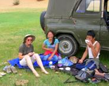

We are here to arrange custom trips for you during your stay in Mongolia. Please contact us with your questions and needs.
Countryside Tours
After a short stay in Ulanbaatar, it’s time to get out of the city and into the countryside! That is the desire and goal of most of the tourists who come to Mongolia.
Mongolia is a vast, largely undeveloped country and as such, is not easy to get around in. Even roads are few and far between. Often you’ll find yourself traveling across the wild country simply following tracks — or sometimes not even that! Helps that we are used to, such as service stations and mechanics, are rare in this land. To navigate this country, you will need the help of people who know it!
Wherever your travel goals are in Mongolia — to the desert land of the Gobi in the south, the high mountain Khazak region in the west, or the beautiful Khovsgol Nuur (Lake Hovsgol) set in the Siberian taiga of the north — we can take you there and at the same time, see to it that you experience the ‘real’ Mongolia and its people and learn about our history.
Closer to Ulanbaatar
Distances are great in Mongolia and are not traveled over as quickly as in the more developed parts of the world. This is part of the excitement of visiting Mongolia; however, it also adds to the difficulty of the visit! Travel over long distances can be exhausting, expensive, and require more time than many visitors have at their disposal.
However, there is an answer! The steppes and mountains close to Ulanbaatar are beautiful places to visit and they give you as true an exposure to the real nomadic way of life as a visit to the more far-flung regions of the country. Unlike in many areas of the world, when you leave the city (UB), you find yourself truly in the countryside. No urban sprawl extending for miles (or kilometers) here!
We can help you arrange visits to the beautiful nearby alpine area of Terelj where, if you’d like, you can go hiking, rock climbing, horse riding, and rafting.

To Contact Us:
USA Phone: 218-201-0488 (Janlyn Gosse)
E-mail: Tsoogii2000mon@yahoo.com (Tsoogii)
Alternate E-mail: Janlyn@snowgoose.biz (Janlyn Gosse)